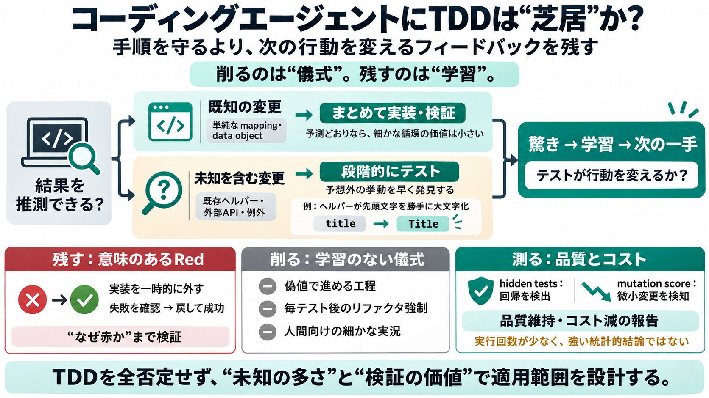

Blog: TDD in the Age of AI Agents | TDD Buddy
Two 2026 empirical studies land the same shape: tests generated from a task description alone catch roughly 25% of injec…

コーディングエージェント開発で、TDD（Red-Green-Refactor）をどこまで“手順のまま”持ち込むべきかを、学習（驚き）とコストの観点で整理します。
TDDは儀式化すると価値が薄れ得る / ただし全否定はしない（価値のあるフィードバックだけ残す）
通常のTDDは、人間が“次の一歩”を迷わないための手順として強力です。ではエージェント開発では、その手順が同じ価値を生むのでしょうか？
鍵は「テストが、エージェントにとって新しい発見（surprise）になるか」です。既知で当てられる変更では、手順通りに回しても学習が増えにくくなります。
Surprise（驚き）= 予測できない挙動差 / 学習の燃料
aidoでは、TDDを丸ごと守る/捨てるではなく、「エージェントにとって意味があるフィードバックだけ」残すようルールを再配線しました。
目的：学習が起きる条件にだけ Red-Green の“細かさ”を寄せる
既存ヘルパーがタイトル先頭の大文字化を“静かに”行うようなケースでは、テストをまとめて作るとエージェントが中身を推測して通ってしまうことがあります。
要点：未知が高いほど“段階”が早期発見に効く
失敗確認（Red）自体は残しますが、「赤を見ただけ」では不十分になり得ます。aidoでは、テストが実装差分を本当に検証しているかを確かめる運用へ改善しました。
Böckelerの指摘を取り込み：なぜ赤なのかを検証
従来ワークフローにあった要素のうち、エージェントの判断に寄与しない儀式は切り落としました。残すのは、次の手を変えるフィードバックだけです。
hidden testsやmutation scoreを使い、機能成功率を維持しつつコストが下がったと報告されています。もっとも、著者は統計的に強い主張ではない点も明記しています。
限界：実行回数が少ない／途中打ち切りがある可能性
重要なのはRed-Green-Refactorという順序そのものではなく、回帰品質を見抜ける評価メカニズムがあることです。aidoの変更は「驚きが生まれない手順」を主に削る方向でした。
結論：TDD全否定ではなく、適用範囲を“評価軸”で設計する
未知（unobserved）／既知（known）は、エージェントが結果を推測できるか、そして既存コードや外部APIの細部など完全に見通せない要因があるかで扱いを決めます。
未知性の境界は現場で曖昧になり得る（運用依存）
TDDは丸ごと捨てるものではありません。ですが、エージェントが次の手を変える“学習可能なフィードバック”にならない工程は、儀式として削ってよい—というのが結論です。
私見：一般原則として盲信せず、「テストが行動を変えるか」を評価軸に当てるのが安全
本稿は提示テキストと補足（Webおよび過去履歴）に基づく要約です。
関連
TDD inside the agent loop - theater or actual value?（テスト有無とmutation score等の比較の言及）
補足
Böckelerの指摘（「赤を見るだけでは証明にならない」趣旨）
履歴
過去のワークフロー整理（TDD方針／Hermes Agent Subscription Router TDD計画など）
注：引用元URLは提示文中に明示がなかったため、ここではタイトルと趣旨の形で記載しています。
Two 2026 empirical studies land the same shape: tests generated from a task description alone catch roughly 25% of injec…
## Key Takeaways TDD matters more with AI agents because speed without discipline produces technical debt at scale Th…
[0:47] as Simon says, this turns out to be a fantastic fit for coding agents. I have definitely found this to be true. B…
passed immediately. Regression effectiveness can be monitored and improved with mutation testing (as I wrote about here)…
Augment Cosmos applies spec-driven orchestration that analyzes the codebase through its Context Engine ahead of generati…